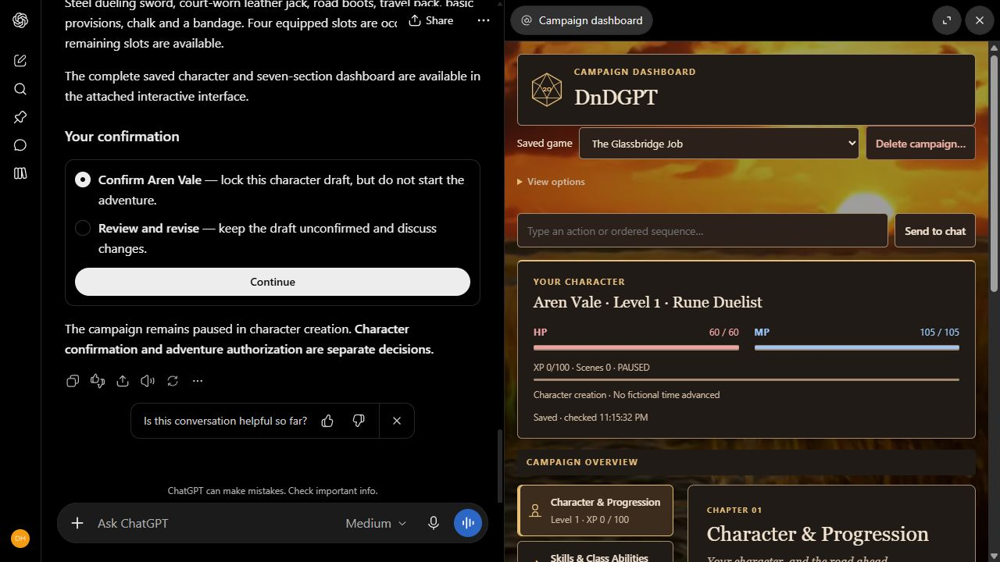

Your kind of hero
Original class kits, five attributes including Luck, and abilities that grow with earned upgrades. A standalone 5e Hack with its own rules and progression.
A homebrew fantasy RPG for ChatGPT
Create a class, meet your companions, and find out what waits beyond the next gate. ChatGPT runs the story. DnDGPT keeps your character, abilities, and campaign progress together in a dashboard beside the conversation.
DnDGPT is free to use with a ChatGPT account that supports custom MCP connections. A paid ChatGPT subscription is recommended for longer play sessions and higher message limits. Availability and limits vary by plan and workspace. Compare ChatGPT plans.
Inside ChatGPT

A closer look at the dashboard

Original class kits, five attributes including Luck, and abilities that grow with earned upgrades. A standalone 5e Hack with its own rules and progression.
Browse your powers, inspect their full rules, and see what each upgrade adds. Keep companions, equipment, and quests close at hand.
Saved character choices and campaign history survive across chats. Ask the GM to save your progress, then reopen your campaign dashboard.
From conversation to campaign
The complete rules are available through the connection. No separate rule upload or paid model API key is needed. DnDGPT is independently maintained and is not currently listed in ChatGPT's public directory.
Already have saved campaigns? Keep using the same sign-in method. Google and email accounts are not automatically linked. The dashboard reflects saved updates, so ask your GM to save important choices.
Read our Privacy Policy and Terms of Service before connecting.